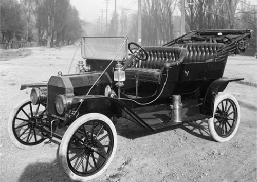

福特(5)〈汽車大王〉 江銘輝 五夢網)
二十一、A型車(圖4)
公司改組後，生產出的A型車非常暢銷，不到一年期，就銷售了650輛，在往後的3個月間，銷售量飛升到1100輛以上，公司也因為接到了大量的訂單，而增加丁4倍的員工。第一輛購得A型車的人是芝加哥的牙醫恩斯特‧芬尼(Ernst Pfennig)，購買日期是1903年7月23日。A型在1904年被C型車取代。

圖4：A型車(摘自維基百科，作者： Original uploader was Doug W at en.wikipedia，Permission：PD-SELF)
二十二、創紀錄
1904年，福特展開始擊敗巴尼斯巴達(Barneys)的紀錄，他開著999型的車子，在底特律附近聖克萊爾湖(Lake St. Clair)的冰上以每小時91.4英里的速度完成每哩39秒2/5秒的新紀錄。
二十三、 N型車(圖5)
1904年，美國汽車工業開始露出曙光。紐約舉行的汽車展示會前往參加的汽車公司很多，大多數是底特律的公司。底特律己逐漸成為世界最大汽車城市。福特汽車公司發展迅猛，在比克特街建造起比原來大10倍的工廠。1906年，製造汽車的公司之間的競爭越來越激烈。福特公司完成了N型車，這是一種優異的新車，它一改引擎裝在座位下的習慣，而移到了車頭，馬力大而價格便宜。有人讚譽 N型車是汽車工業革命的產品。N型車問世後，各地的訂單如雪花一樣飛來。福特計畫在一年內要生產1萬至1·5萬輛N型車。要達到這大量生產的目標，福特給工廠增置了許多性能優良的機械。此時福特己成為福特汽車公司的董事長了。

圖5：N型車(摘自維基百科，作者：Original uploader was Harz4 at de.wikipedia)
二十四、T型車(圖6)
兩年之後，1908年10月1日，福特又研發製造出T型車。T型車在汽車大賽中又一次獲得勝利。在生產T型車時，福特完成了一貫作業的大量生產方式，使工廠每年可生產近百輛的T型車。以後，年產量以成倍的速度上升。1909年共生產10666輛，售價825元。

圖6：T型車(摘自維基百科，作者：Harry Shipler
二十五、公司風波
1906年，創辦人之一的馬兒科森(Alexander Y. Malcomson)出股份予福特，退出經營。1916年福特汽車獲利極高，公司手中保留盈餘高達1.12億美元。福特決定花錢在擴大產量上，卻引起持股10%的主要股東道奇兄弟不滿，道奇兄弟認為企業盈餘應先分配給股東，當時持股達80%的亨利·福特反對，道奇兄弟因此告上法院。1919年密西根州最高法院判決道奇兄弟勝訴，判決指出企業設立的目的在為股東謀利，企業董事也不可改變這項基本目的。此判決日後成為企業是否要負社會責任等其他目的之爭論焦點。
截至1913年底，全美國有50%的汽車都是福特公司生產的。然而至1918年底，全美國的汽車有一半都是T型車。當時絕大部分T型車的顏色都是清一色的黑色，基本沒有什麼其他顏色可供選擇。據傳亨利·福特有一句名言：“顧客可以選擇他想要的任何一種顏色，只要它是黑色。”意思就是顧客只能夠購買黑色的T型車。亨利‧福特並不是對黑色有什麼特殊癖好，其堅持黑色的真正原因在於黑色油漆乾燥得快，可以使汽車在落地後第一時間能夠被賣出去。這也算是亨利‧福特追求生產效率的極端表現之一。
1919年，時任總經理的另一創辦人高任思退出福特汽車。同年，亨利·福特的獨子愛德西爾‧布萊恩‧福特(Edsel Bryant Ford)繼承他父親公司總裁的職位，但是亨利·福特仍然可干涉公司的管理且始終具有其影響力。雖然高效率的生產使公司產品的價格一直較低，但由於公司內部不與時俱進的家長式管理以及對高端消費者市場的忽略，福特公司在美國開始逐漸失去汽車市場份額。通用汽車、克萊斯勒以及其他小型的競爭企業開始為消費者提供與T型車相比擁有更多豪華設備的汽車。